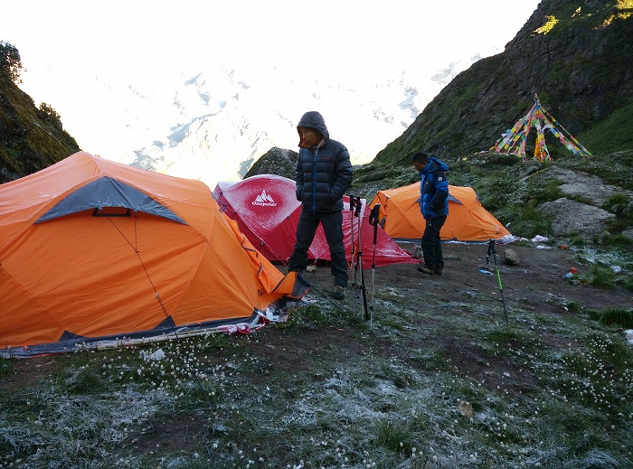
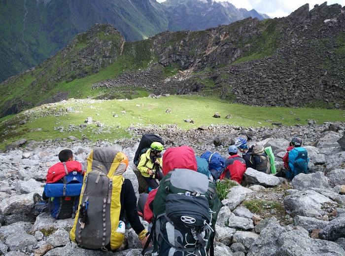
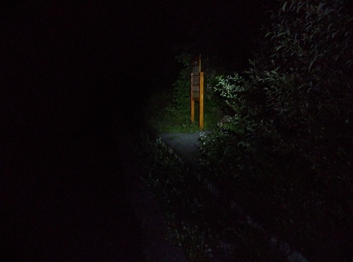

发信人: lllxxl (lllxxl), 信区: outdoor
标 题: 【合集】再会半脊--半脊峰登山行记(3)
发信站: 饮水思源 (2016年03月16日00:14:08 星期三), 站内信件
☆──────────────────────────────────────☆
hemind (TD) 于 2016年02月02日16:14:57 星期二)
提到：
7月17日,今天的目标是海拔5000米的C2营地.7点半左右才钻出帐篷,依旧是好天气.早餐是
麦片加小面包,麦片实在是难以下咽.
钻出帐篷,好天气
 screen.width - 200){this.width = screen.width - 200}">
饭后收拾好装备,后几天不需要的留在C1藏在石头缝中了,9点左右才出发.翻过C1上面那个
平台,之后一直在大小石头间转来转去,抬头望见C2前的垭口,垭口旁边突兀的小山叫拇指峰
.
中间那个小小尖就是拇指峰

休息一下
 screen.width - 200){this.width = screen.width - 200}">
一开始,教练在前面带路,大家都能跟上,比较慢地爬升着.10点半那一次休息时候,晓远的脸
色比较差.大概又上升了一百米,海拔4700米附近,晓远已经走得很慢了,每走几步就要停下
来休息一下.两个教练走得比较快,在队伍的上方看见我们很慢便下来看了晓远的情况,当即
劝其下撤.我们听取了教练的建议,毕竟他们的经验比我们丰富太多.晓远一开始想要坚持走
一段,后还是决定立即下撤.能看出晓远的不舍,第二年的半脊,依然是带着高反望着山巅.
我希望一名教练能带晓远下撤,但是两名教练坚持说不换搭档,综合考虑后我还是决定带晓
远下撤,带走了一顶帐篷和一根动力绳.
11点半左右开始下山,一路上休息时晓远会看看继续攀登的队友,我始终没有回头.下午1点
到达C1,随着海拔的下降,晓远的状态好了一些,一路上还算顺利,但是我为了赶路有时会落
下晓远一段距离,还是缺少对队员的照顾.我把帐篷留在了C1,计划着当天晚上回到C1.
4点半左右回到大本营,晓远坐上了出毕棚沟的景区车,我则留在大本营,明天上山接应下山
的队员.在大本营吃了一碗牛杂汤,一个馕,躺在睡袋里休整,6点左右通过对讲机和C2的队员
联系,他们扎营结束,准备练习结组和滑坠制动,袁航和陈颖君的状态一般,商量好明天出发
冲顶后再联系.
在睡袋里躺了两个小时还是没睡着,一直在盘算着当天晚上再上升到C1,明天凌晨再赶上大
部队.我预计自己6-8个小时能到C2,这样我就必须在当晚8点左右出发.
晚上8点半,天还没有完全黑下来,天下着小雨,我准备了一些能量食品,背上上1.5L左右的水
,还有备用的保暖衣物,便出发了.由于比较急,走得太快,出了很多汗水,1个多小时后到达海
拔4000米杜鹃林时,我已经喝掉了600ml的水,已经感觉到内衣有些被汗湿,测了一下自己的
心率,在140上下,盘算着到达C1后在帐篷里休整一下就可以了,所以我还是继续上升了.
又上升了一百多米,走在草甸上,再没有树枝可以挡风,我感受到了一阵凉意,再次停下来,重
新评估了我的状态.内衣已经湿透,C1虽有帐篷但没有搭起来,睡袋被放在大本营没有带,备
用炉头也没有带不能烧水喝,到达C1后不能很好的保暖.最后认为自己不能冒这个险,骂了自
己一句后便飞快下山了,只记得很快很快,只想着能尽快回到大本营.
回到大本营大概是10点半,打了些热水,准备躺下时发现自己连抓绒衣都完全湿透了,已经有
点失温,浑身无力.钻进睡袋后恢复得很快,也很快就睡着了.
当晚下山后拍的一张照片
 screen.width - 200){this.width = screen.width - 200}">
7月18日是队伍冲顶的日子,我8点起床,早餐后迅速出发了,准备去C1接应队员们.这几天第
四次走去C1的路,已经不能再熟悉.11点半左右到达C1,然而昨晚的行动让对讲机进水而不能
开机,不能联系队伍,不知道队伍目前的情况.在C1待了半个多小时也没看到队员,这时想起
半脊很多地方都有手机信号,便给教练打了电话,还真接通了.得知队伍正走在C2下不远的垭
口处,陈颖君状态比较差,我便也从C1出发去接应队伍.
我上升到大概到4800米的高度,突然天开始飘雪,出现大风,能见度变得很低,有些担心队员
们.还好,1点半左右遇见了队伍,先是接过陈颖君的包,后又和袁航换了背包.陈颖君有些虚
脱,走得比较慢,还好不久天气即变好,2点半左右所有队员回到C1.后面就是一路下山,5点半
左右队伍安全回到大本营.
19日回到成都,大家一起吃吃喝喝,一起聊在山上的日子,也是一段非常快乐的时光.
回想那晚的单人攀登,还是自己太过冲动,只想着赶上队伍而迷失了自己,没有明确自己在做
什么样的事情,对自己和队伍都是非常不负责任的做法,希望后来者引以为戒.
我于登山,一种莫名的喜欢,就像对心动的女孩,一旦触及心灵深处,就会一发不可收拾.
☆──────────────────────────────────────☆
zzmax (zzmaxu) 于 2016年02月03日01:35:00 星期三)
提到：
re
☆──────────────────────────────────────☆
crazycams (嗡嗡嗡) 于 2016年02月03日09:28:48 星期三)
提到：
nice
☆──────────────────────────────────────☆
hemind (TD) 于 2016年02月03日16:10:22 星期三)
提到：
回家了没
你的勃朗峰后续呢~
☆──────────────────────────────────────☆
yanhao (一个人…) 于 2016年02月03日23:17:46 星期三)
提到：
工作快一年再来看你们的游记，已经美好而遥远得不忍回头了。。。
☆──────────────────────────────────────☆
alexgao (瓢子) 于 2016年02月09日08:55:56 星期二)
提到：
re
☆──────────────────────────────────────☆
icermoon (icer 雨神) 于 2016年02月16日14:15:34 星期二)
提到：
赞心动的女孩
另外，单独上升赶队伍是托大了，但是后续处理及时下山是很好的修正。
成熟的登山者应有的心态。
另外，要赞两个教练不换搭档的决定
☆──────────────────────────────────────☆
Mammut (长毛萌犸象) 于 2016年02月22日11:13:04 星期一)
提到：
🐂牛逼
|